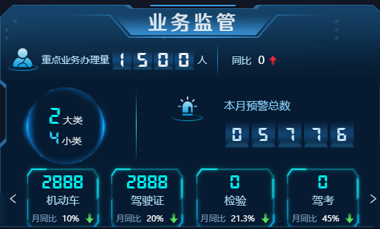
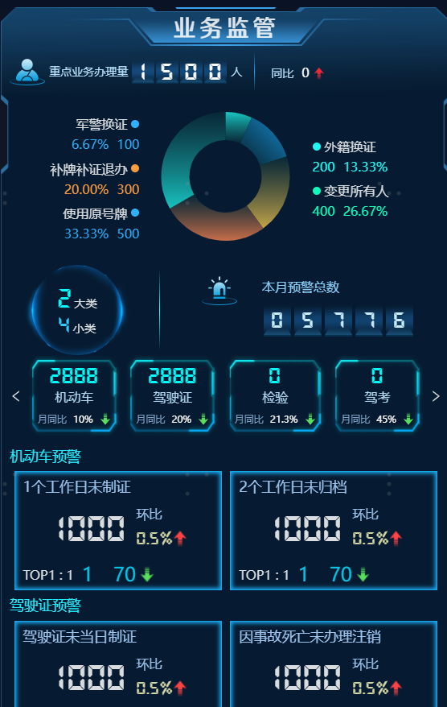
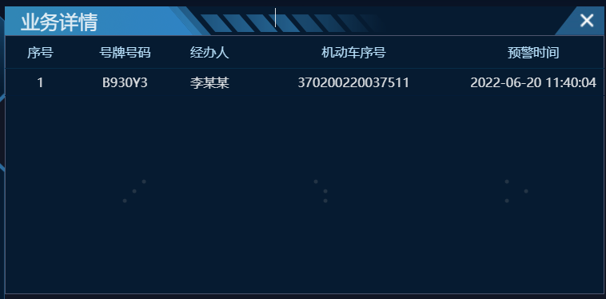
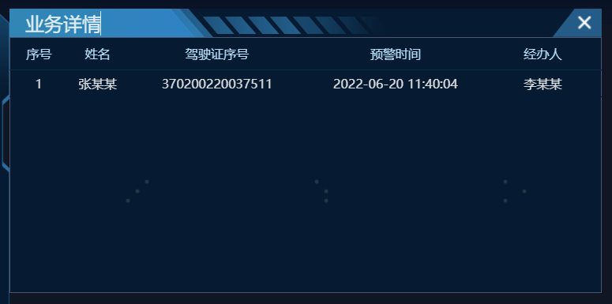
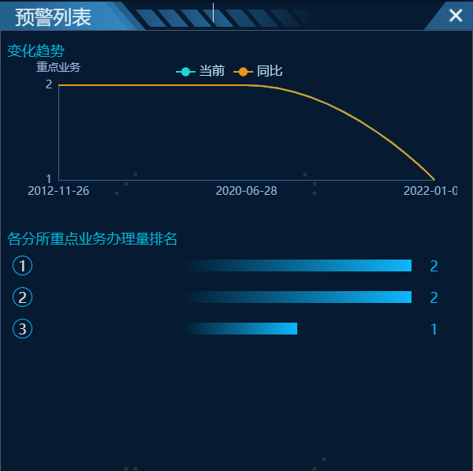

业务监管
1.基本信息
权限
暂无
扩展
暂无
历史记录
| 版本 | 开发人 | 需求描述 | 时间 |
|---|---|---|---|
| 立项版本 | 张天禹，张乐 | 对车驾管中车辆和驾驶人的数据统计和展示 | 2022年7月12日 |
2.页面及接口设计
一级组件
VdmPoliceSupervisionCard: () => import('@/components/VdmPoliceSupervisionCard')


重点业务情况接口
POST '/HiatmpPro/cockpit/business/getBusinessNum'
数据流
数据来源：下发库
数据表：
军警换证数量统计表：drv_army_check
外籍换证数量统计表：drv_flow
补牌补证退办数量统计表：drv_flow
变更所有人数量统计表：veh_log
使用原号牌：暂无统计
计算逻辑：
根据各个种类的统计条件，直接查询下发库相应的表返回结果。数据来源：下发库
数据表：
军警换证数量统计表：drv_army_check
外籍换证数量统计表：drv_flow
补牌补证退办数量统计表：drv_flow
变更所有人数量统计表：veh_log
使用原号牌：暂无统计
计算逻辑：
根据各个种类的统计条件，直接查询下发库相应的表返回结果。
机动车预警总数接口
POST '/HiatmpPro/cockpit/business/getVehicleWarningCount'
数据流
数据来源：业务库
数据表：
机动车预警统计表：CKPT_BS_VEHICLE_WARNING
计算逻辑：
每晚 1:00 执行:以8月19号为例:
--业务监管-机动车1个工作日未制证
--逻辑: 1.查出两天内17-19号之前已打印制证的日志流水号
-- 2. 匹配筛选出17-19号之前制证业务,不包含已打印制证的机动车序号
-- 3. 根据序号查询对应的机动车及其信息
select *
from vehicle
where xh in (select distinct xh
from veh_log v
where lsh not in (select lsh
from veh_log lg
where 1 = 1
and lg.ywlx in ('A', 'B')
and lg.czgw = '0221'
and lg.clrq between to_date('2022-08-17 00:00:00','yyyy-MM-dd HH24:mi:ss') and to_date('2022-08-19 00:00:00','yyyy-MM-dd HH24:mi:ss'))
and v.ywlx in ('A', 'B')
and v.clrq between to_date('2022-08-17 00:00:00','yyyy-MM-dd HH24:mi:ss') and to_date('2022-08-19 00:00:00','yyyy-MM-dd HH24:mi:ss'))
-- 业务监管-车驾管-业务监管-机动车2个工作日未归档
-- 逻辑: 1.查出两天内17-19号之前已归档的日志流水号
-- 2. 匹配筛选出17-19号之前制证业务,不包含归档的机动车序号
-- 3. 根据序号查询对应的机动车及其信息
select *
from vehicle
where xh in (select distinct xh
from veh_log v
where lsh not in (select lsh
from veh_log lg
where 1 = 1
and lg.ywlx in ('A', 'B')
and lg.czgw = '0301'
and lg.clrq between to_date('2022-08-16 00:00:00','yyyy-MM-dd HH24:mi:ss') and to_date('2022-08-19 00:00:00','yyyy-MM-dd HH24:mi:ss'))
and v.ywlx in ('A', 'B')
and v.clrq between to_date('2022-08-16 00:00:00','yyyy-MM-dd HH24:mi:ss') and to_date('2022-08-19 00:00:00','yyyy-MM-dd HH24:mi:ss'))
1、由【机动车1个工作日未制证】定时任务BusinessGetVehicleOver1DayWZZJob和【机动车2个工作日未归档】定时任务BusinessGetVehicleOver2DayWGDJob统计得出预警数据，写入CKPT_BS_VEHICLE_WARNING表
2、根据查询条件，从预警表中统计结果
驾驶证预警总数接口
POST '/HiatmpPro/cockpit/business/getDrivingWarningCount'
数据流
数据来源：业务库
数据表：
驾驶证预警统计表：CKPT_BS_DRIVINGLICENSE_WARNING
每晚 1:00 执行:以8月19号为例:
--业务监管-驾驶证未当日制证
--逻辑:查询18号整天,科目4成绩合格的 且 日志drv_log中制证不存在或者不在当天的.
SELECT *
FROM (select *
from DRV_THEORYEXAM_LOG dg
where dg.kscj >= 90
and dg.kskm = '5'
and JSSJ between to_date('2022-08-18 00:00:00','yyyy-MM-dd HH24:mi:ss') and to_date('2022-08-18 23:59:59','yyyy-MM-dd HH24:mi:ss')) dg
left join (select *
from drv_log drv
where ywgw = 'G'
and clrq between to_date('2022-08-18 00:00:00','yyyy-MM-dd HH24:mi:ss') and to_date('2022-08-18 23:59:59','yyyy-MM-dd HH24:mi:ss')) drv
on drv.sfzmhm = dg.sfzmhm
LEFT JOIN DRIVINGLICENSE de
on de.sfzmhm = dg.sfzmhm
where drv.clrq is null
-- 业务监管-驾驶证因事故死亡未注销
-- 逻辑:2个月前 是死亡事故,且机动车状态不是注销的 执行前会删除上次数据,保证数据实时性
select af.xm, af.sfzmhm, af.swsj, d.zt, d.XH, d.LSH, d.DABH, d.GLBM, d.JBR
from acd_filehuman af
left join drivinglicense d
on af.sfzmhm = d.sfzmhm
where af.swsj <= trunc(sysdate)
and af.swsj >= add_months(trunc(sysdate, 'mm'), -2)
and instr(d.zt, 'G') = 0
计算逻辑：
1、由【驾驶证未当日制证】定时任务BusinessGetDrivingLicenseOver0DayWZZJob和【驾驶证因事故死亡未注销】定时任务BusinessGetDrivingLicenseSWWZXJob统计得出预警数据，写入CKPT_BS_DRIVINGLICENSE_WARNING表
2、根据查询条件，从预警表中统计结果
机动车预警详细接口
POST '/HiatmpPro/cockpit/business/getVehicleWarningDetail'
数据流
数据来源：业务库
数据表：机动车预警统计表CKPT_BS_VEHICLE_WARNING
计算逻辑：
直接根据查询条件，查询CKPT_BS_VEHICLE_WARNING表计算结果返回。
驾驶证预警详细接口
POST '/HiatmpPro/cockpit/business/getDrivingWarningDetail'
数据流
数据来源：业务库
数据表：驾驶证预警表CKPT_BS_DRIVINGLICENSE_WARNING
计算逻辑：
直接根据查询条件，查询CKPT_BS_DRIVINGLICENSE_WARNING表计算结果返回。
二级弹窗
VdmDetail: () => import("@/components/VdmPoliceSupervisionCard/details/VdmDetail")



重点业务情况下钻接口
POST '/HiatmpPro/cockpit/business/getBusinessNumTrend'
数据流
数据来源：下发库
数据表：
军警换证数量统计表：drv_army_check
外籍换证数量统计表：drv_flow
补牌补证退办数量统计表：drv_flow
计算逻辑：
1、根据统计时间，直接查询下发库相关表计算出当前周期的数据。
2、再根据统计时间计算上一对比周期的时间，然后直接查询下发库相关表计算出当前周期的数据。
3、将1和2计算的结果，按折线和饼图要求返回
所有预警根据部门排名接口
POST '/HiatmpPro/cockpit/business/getAllWarningCount'
数据流
数据表：
机动车预警统计表：CKPT_BS_VEHICLE_WARNING
驾驶证预警统计表：CKPT_BS_DRIVINGLICENSE_WARNING
计算逻辑：
根据部门编号，从表中分组统计预警数，计算各部门的总和，然后排序返回结果
地图下钻
重点业务情况下钻接口
POST '/HiatmpPro/cockpit/business/getBusinessNumTrend'
数据流
数据来源：下发库
数据表：
军警换证数量统计表：drv_army_check
外籍换证数量统计表：drv_flow
补牌补证退办数量统计表：drv_flow
计算逻辑：
根据统计时间，直接查询下发库相关表，计算个业务数量。然后按展示要求返回数据。
所有预警根据部门排名接口
POST '/HiatmpPro/cockpit/business/getAllWarningCount'
数据流
数据来源：业务库
数据表：
机动车预警统计表：CKPT_BS_VEHICLE_WARNING
驾驶证预警统计表：CKPT_BS_DRIVINGLICENSE_WARNING
计算逻辑：
根据部门编号，从表中分组统计预警数，计算各部门的总和，然后排序返回结果
3.依赖
数据库依赖表
| 表名 | 中文名 | 所属库 | 数据来源 |
|---|---|---|---|
| CKPT_BS_VEHICLE_WARNING | 机动车预警表 | 管控 | |
| CKPT_BS_DRIVINGLICENSE_WARNING | 驾驶证预警表 | 管控 | |
| drv_army_check | 军警换证登记 | 下发库 | 第三方库 |
| drv_flow | 流水表 | 下发库 | 第三方库 |
| veh_log | 日志表 | 下发库 | 第三方库 |
| acd_filehuman | 事故信息人员表 | 下发库 | 第三方库 |
| drivinglicense | 驾驶证表 | 下发库 | 第三方库 |
| vehicle | 机动车表 | 下发库 | 第三方库 |
服务依赖
| 服务名 | 版本 | 备注 |
|---|---|---|
| urbantraffic-hiatmp-cockpit |